# Cargar paquetes necesarios
library(dplyr) # manipulación
library(ggplot2) # gráficos
library(readr) # importar
library(car) # recodificar
library(fBasics) # descriptivos
library(DT) # tablas interactivas
library(tidyr) # limpieza adicional
library(here)
# Configuración de visualización
theme_set(theme_bw())
options(scipen = 999) # Evita notación científica1 Introducción
En este taller practicaremos el cálculo e interpretación de estadísticos descriptivos utilizando datos reales de la Encuesta CEP (Centro de Estudios Públicos), una de las encuestas de opinión pública más relevantes de Chile. Trabajaremos con variables categóricas y continuas, y aprenderemos a representarlas gráficamente con ggplot2.
1.1 Objetivos del taller
- Construir tablas de frecuencia para variables categóricas
- Calcular estadísticos de tendencia central, dispersión y posición para variables continuas
- Elaborar gráficos descriptivos univariados (barras, histograma, boxplot)
- Interpretar los resultados obtenidos
2 Preparación
2.1 Cargar paquetes
2.2 Cargar datos
# Cargar la base de datos
cep <- read.csv(file = here ("bases", "raw", "cep95.csv"), # fijamos la ubicación del archivo
sep = ",", # importante para que R reconozca las columnas correctamente
encoding = "UTF-8",
stringsAsFactors = FALSE)
# Limpieza rápida: Convertir variables clave a factores para mejores gráficos
# Esto evita que variables como 'región' se traten como números
cep <- cep %>%
mutate(zona_u_r = as.factor(zona_u_r),
iden_pol_2 = as.factor(iden_pol_2))
# Ver las primeras filas
head(cep) ump zona_u_r region_3 elec_pres_urna_30 elec_pres_urna_31 elec_pres_urna_32
1 96 1 8 5 2 1
2 197 1 13 11 5 5
3 197 1 13 4 2 1
4 12 1 2 4 2 2
5 198 1 13 3 1 5
6 192 1 13 10 4 4
elec_pres_urna_33 bienestar_2 bienestar_3 percepcion_2 percepcion_3
1 2 10 5 2 1
2 5 5 5 2 2
3 2 5 5 3 3
4 2 3 1 1 2
5 1 8 5 3 3
6 4 10 6 3 2
percepcion_5 percepcion_6 percepcion_38 percepcion_4 eval_gob_1 iden_pol_2
1 3 1 4 3 2 3
2 3 3 3 2 1 -9
3 2 2 4 2 2 10
4 3 3 5 3 2 8
5 3 2 3 2 1 3
6 2 1 4 2 -8 -8
eval_act_pol_1_fh eval_act_pol_1_ae eval_act_pol_1_el eval_act_pol_1_dv
1 1 6 3 5
2 5 2 3 1
3 2 3 2 5
4 1 3 1 3
5 4 2 4 2
6 2 6 6 6
eval_act_pol_1_em eval_act_pol_1_hb eval_act_pol_1_ft eval_act_pol_1_gq
1 6 6 3 3
2 2 2 1 2
3 3 2 4 4
4 1 1 3 1
5 2 6 6 2
6 6 6 6 6
eval_act_pol_1_gw eval_act_pol_1_hd eval_act_pol_1_x eval_act_pol_1_gt
1 6 5 5 3
2 1 1 1 5
3 2 5 4 1
4 2 5 1 1
5 6 2 3 4
6 6 6 6 6
eval_act_pol_1_fa eval_act_pol_1_hc eval_act_pol_1_gx confianza_6_a
1 6 6 6 3
2 2 3 1 2
3 3 2 3 2
4 3 2 6 3
5 2 2 6 3
6 6 6 6 1
confianza_6_b confianza_6_c confianza_6_j confianza_6_d confianza_6_e
1 2 2 3 3 1
2 3 2 2 3 2
3 3 1 4 4 2
4 2 2 4 4 3
5 3 2 3 3 3
6 1 3 3 3 3
confianza_6_f confianza_6_n confianza_6_x confianza_6_g confianza_6_h
1 4 2 3 2 2
2 3 2 3 2 3
3 2 4 3 2 2
4 4 2 3 4 2
5 3 2 3 3 2
6 2 2 3 3 3
confianza_6_i confianza_6_k confianza_6_s confianza_6_o confianza_6_p
1 4 4 2 2 3
2 2 3 3 3 3
3 4 2 3 2 3
4 4 4 2 2 4
5 2 3 2 3 2
6 3 3 3 3 3
confianza_6_r confianza_6_m confianza_6_ab confianza_6_ac democracia_38
1 2 2 2 3 8
2 2 2 3 3 5
3 2 1 2 3 2
4 2 3 3 3 10
5 2 2 3 3 7
6 3 1 2 2 10
pobreza_63 pobreza_62 religion_14 religion_64 democracia_21 democracia_37_a
1 5 5 2 2 2 1
2 4 3 2 2 2 2
3 5 3 2 2 3 1
4 10 10 2 3 1 1
5 7 6 2 2 1 1
6 10 10 2 2 3 1
democracia_37_b democracia_37_c democracia_37_d pp_congreso_61_b
1 1 3 2 1
2 3 3 3 2
3 1 4 4 2
4 2 3 1 2
5 1 3 3 2
6 1 1 1 2
polarizacion_1_a polarizacion_1_b polarizacion_6_a polarizacion_6_b
1 4 5 5 5
2 2 5 10 1
3 10 1 1 10
4 10 0 0 2
5 3 6 9 5
6 5 0 -8 -8
polarizacion_6_c polarizacion_6_d polarizacion_6_e confianza_17
1 5 5 5 3
2 2 2 1 4
3 10 8 8 3
4 10 2 0 3
5 4 5 5 1
6 -8 -8 -8 -8
interes_pol_1_b interes_pol_2_a interes_pol_2_b interes_pol_2_c
1 4 3 2 3
2 5 2 2 2
3 3 2 2 3
4 2 1 2 1
5 3 2 3 2
6 5 3 3 3
interes_pol_2_d interes_pol_2_e interes_pol_2_f iden_pol_3 iden_pol_3_a
1 2 2 3 9 NA
2 3 2 3 15 15
3 2 2 3 27 NA
4 2 1 1 27 NA
5 2 2 3 15 15
6 3 3 3 15 15
elec_part_37 elec_pres_144_a elec_pres_144_b2 elec_pres_125 elec_part_4
1 1 2 NA 3 1
2 1 1 NA 2 1
3 1 2 NA 2 1
4 1 2 NA 2 1
5 1 1 NA 2 1
6 2 NA 5 4 4
elec_pres_1_responde elec_pres_2_responde elec_pres_148 elec_pres_149_a
1 1 1 5 3
2 1 1 3 3
3 1 1 4 2
4 1 1 4 3
5 1 1 3 3
6 8 8 -8 3
elec_pres_149_b elec_pres_149_c elec_pres_149_d elec_pres_149_e
1 3 2 2 2
2 3 1 3 3
3 3 3 1 2
4 3 3 1 3
5 2 1 3 3
6 3 3 3 3
elec_pres_149_f elec_pres_149_g elec_pres_149_h elec_pres_150_a
1 3 3 2 2
2 3 3 3 1
3 2 2 2 2
4 3 3 3 2
5 3 3 3 1
6 3 3 3 3
elec_pres_150_b elec_pres_150_c elec_pres_151_a elec_pres_151_b
1 1 2 5 5
2 3 1 2 3
3 1 2 0 3
4 1 2 0 0
5 2 1 0 6
6 3 3 -8 -8
elec_pres_151_c elec_pres_151_d elec_pres_151_e elec_pres_151_f
1 1 10 10 5
2 1 8 8 7
3 1 10 10 8
4 0 10 7 4
5 2 7 10 7
6 -8 -8 -8 -8
elec_pres_151_g elec_pres_151_h elec_pres_152_a elec_pres_152_b
1 5 5 8 8
2 5 5 3 3
3 5 10 4 4
4 5 3 4 4
5 5 6 3 3
6 -8 -8 -8 -8
elec_pres_152_c elec_pres_152_d elec_pres_152_e elec_pres_152_f
1 3 5 8 5
2 3 3 3 3
3 4 4 6 4
4 4 4 4 4
5 3 3 3 3
6 -8 -8 -8 -8
elec_pres_153_a elec_pres_153_b elec_pres_153_c elec_pres_153_d
1 8 5 5 5
2 3 3 3 3
3 4 4 4 4
4 4 4 4 4
5 3 5 3 3
6 -8 -8 -8 -8
elec_pres_153_e elec_pres_153_f elec_pres_153_g elec_pres_153_h
1 5 5 5 5
2 3 3 3 3
3 4 4 4 4
4 4 4 4 4
5 3 5 5 3
6 -8 -8 -8 -8
elec_pres_145_a elec_pres_145_b democracia_12 anomia_4_a bienestar_19_c
1 7 6 3 3 3
2 4 1 2 3 4
3 12 7 2 3 4
4 4 3 3 4 2
5 2 1 3 2 4
6 2 7 3 2 3
bienestar_19_d bienestar_19_e rol_gobierno_16 ciudadania_16 ciudadania_34
1 4 4 3 4 3
2 4 4 4 3 7
3 4 4 3 4 2
4 -8 -8 3 5 1
5 4 4 1 4 1
6 4 1 4 4 2
sexo edad nac_dia nac_mes nac_ano info_enc_59_2_otro info_enc_58
1 2 25 2 6 2000 NA 1
2 2 63 18 11 1961 NA 2
3 1 61 8 3 1963 NA 2
4 1 62 14 12 1962 NA 2
5 2 86 1 1 1939 NA 2
6 2 34 17 12 1990 NA 2
info_enc_30_b info_enc_30_b_otro mtf_60_aux mtf_60 info_enc_50_a_aux
1 5 NA 1 0 NA
2 NA NA 1 3 1
3 NA NA 1 0 NA
4 NA NA 1 3 1
5 NA NA 1 2 1
6 NA NA 1 1 1
info_enc_50_a estado_civil_g educacion_104_a info_enc_61 info_enc_57
1 NA 5 4 2 1
2 1 1 4 2 2
3 NA 8 4 2 1
4 3 6 6 2 1
5 2 7 3 2 1
6 1 8 1 2 1
info_hogar_28_c info_enc_12_c info_enc_12_c_otro info_enc_35 info_enc_20_c
1 NA 2 NA 1 8
2 5 1 NA 3 3
3 NA 1 NA 1 4
4 NA 2 NA 1 4
5 NA 7 NA 3 5
6 NA 1 NA 1 3
info_hogar_3_c gse pond encuesta encuesta_a encuesta_m id_bu_encuesta
1 8 4 0.5854936 95 2025 9 1
2 4 3 0.5274519 95 2025 9 2
3 4 4 0.2664923 95 2025 9 3
4 4 3 0.4739814 95 2025 9 4
5 5 3 0.4242343 95 2025 9 5
6 3 3 0.4141876 95 2025 9 6
id_bu percepcion_1_a percepcion_1_b percepcion_1_c democracia_20
1 1-95 1 13 4 3
2 2-95 16 10 1 2
3 3-95 6 3 14 4
4 4-95 3 2 4 5
5 5-95 3 1 10 4
6 6-95 2 14 6 2
elec_pres_147 elec_parla_36_a elec_parla_36_b elec_parla_36_c elec_parla_36_d
1 3 2 2 1 1
2 -9 1 1 1 2
3 5 2 2 2 1
4 5 2 2 2 2
5 1 1 1 1 2
6 NA -8 -8 -8 -8
elec_parla_36_e elec_parla_36_f esc_nivel_1_c info_enc_59_2 estrato secu
1 1 1 8 1 12 95096
2 2 1 4 1 20 95197
3 1 2 4 1 20 95197
4 1 2 4 1 2 95012
5 2 2 8 1 20 95198
6 -8 -8 4 2 20 95192# Revisar los nombres de las variables disponibles
names(cep) [1] "ump" "zona_u_r" "region_3"
[4] "elec_pres_urna_30" "elec_pres_urna_31" "elec_pres_urna_32"
[7] "elec_pres_urna_33" "bienestar_2" "bienestar_3"
[10] "percepcion_2" "percepcion_3" "percepcion_5"
[13] "percepcion_6" "percepcion_38" "percepcion_4"
[16] "eval_gob_1" "iden_pol_2" "eval_act_pol_1_fh"
[19] "eval_act_pol_1_ae" "eval_act_pol_1_el" "eval_act_pol_1_dv"
[22] "eval_act_pol_1_em" "eval_act_pol_1_hb" "eval_act_pol_1_ft"
[25] "eval_act_pol_1_gq" "eval_act_pol_1_gw" "eval_act_pol_1_hd"
[28] "eval_act_pol_1_x" "eval_act_pol_1_gt" "eval_act_pol_1_fa"
[31] "eval_act_pol_1_hc" "eval_act_pol_1_gx" "confianza_6_a"
[34] "confianza_6_b" "confianza_6_c" "confianza_6_j"
[37] "confianza_6_d" "confianza_6_e" "confianza_6_f"
[40] "confianza_6_n" "confianza_6_x" "confianza_6_g"
[43] "confianza_6_h" "confianza_6_i" "confianza_6_k"
[46] "confianza_6_s" "confianza_6_o" "confianza_6_p"
[49] "confianza_6_r" "confianza_6_m" "confianza_6_ab"
[52] "confianza_6_ac" "democracia_38" "pobreza_63"
[55] "pobreza_62" "religion_14" "religion_64"
[58] "democracia_21" "democracia_37_a" "democracia_37_b"
[61] "democracia_37_c" "democracia_37_d" "pp_congreso_61_b"
[64] "polarizacion_1_a" "polarizacion_1_b" "polarizacion_6_a"
[67] "polarizacion_6_b" "polarizacion_6_c" "polarizacion_6_d"
[70] "polarizacion_6_e" "confianza_17" "interes_pol_1_b"
[73] "interes_pol_2_a" "interes_pol_2_b" "interes_pol_2_c"
[76] "interes_pol_2_d" "interes_pol_2_e" "interes_pol_2_f"
[79] "iden_pol_3" "iden_pol_3_a" "elec_part_37"
[82] "elec_pres_144_a" "elec_pres_144_b2" "elec_pres_125"
[85] "elec_part_4" "elec_pres_1_responde" "elec_pres_2_responde"
[88] "elec_pres_148" "elec_pres_149_a" "elec_pres_149_b"
[91] "elec_pres_149_c" "elec_pres_149_d" "elec_pres_149_e"
[94] "elec_pres_149_f" "elec_pres_149_g" "elec_pres_149_h"
[97] "elec_pres_150_a" "elec_pres_150_b" "elec_pres_150_c"
[100] "elec_pres_151_a" "elec_pres_151_b" "elec_pres_151_c"
[103] "elec_pres_151_d" "elec_pres_151_e" "elec_pres_151_f"
[106] "elec_pres_151_g" "elec_pres_151_h" "elec_pres_152_a"
[109] "elec_pres_152_b" "elec_pres_152_c" "elec_pres_152_d"
[112] "elec_pres_152_e" "elec_pres_152_f" "elec_pres_153_a"
[115] "elec_pres_153_b" "elec_pres_153_c" "elec_pres_153_d"
[118] "elec_pres_153_e" "elec_pres_153_f" "elec_pres_153_g"
[121] "elec_pres_153_h" "elec_pres_145_a" "elec_pres_145_b"
[124] "democracia_12" "anomia_4_a" "bienestar_19_c"
[127] "bienestar_19_d" "bienestar_19_e" "rol_gobierno_16"
[130] "ciudadania_16" "ciudadania_34" "sexo"
[133] "edad" "nac_dia" "nac_mes"
[136] "nac_ano" "info_enc_59_2_otro" "info_enc_58"
[139] "info_enc_30_b" "info_enc_30_b_otro" "mtf_60_aux"
[142] "mtf_60" "info_enc_50_a_aux" "info_enc_50_a"
[145] "estado_civil_g" "educacion_104_a" "info_enc_61"
[148] "info_enc_57" "info_hogar_28_c" "info_enc_12_c"
[151] "info_enc_12_c_otro" "info_enc_35" "info_enc_20_c"
[154] "info_hogar_3_c" "gse" "pond"
[157] "encuesta" "encuesta_a" "encuesta_m"
[160] "id_bu_encuesta" "id_bu" "percepcion_1_a"
[163] "percepcion_1_b" "percepcion_1_c" "democracia_20"
[166] "elec_pres_147" "elec_parla_36_a" "elec_parla_36_b"
[169] "elec_parla_36_c" "elec_parla_36_d" "elec_parla_36_e"
[172] "elec_parla_36_f" "esc_nivel_1_c" "info_enc_59_2"
[175] "estrato" "secu" 2.3 Exploración inicial
# Dimensiones de la base (filas = casos, columnas = variables)
dim(cep)[1] 1217 176# Resumen rápido de todas las variables
glimpse(cep)Rows: 1,217
Columns: 176
$ ump <int> 96, 197, 197, 12, 198, 192, 198, 80, 142, 188, 18…
$ zona_u_r <fct> 1, 1, 1, 1, 1, 1, 1, 1, 1, 1, 1, 1, 1, 1, 1, 1, 1…
$ region_3 <int> 8, 13, 13, 2, 13, 13, 13, 7, 13, 13, 13, 13, 13, …
$ elec_pres_urna_30 <int> 5, 11, 4, 4, 3, 10, 5, 8, 3, 11, 3, 3, 3, 9, 6, 4…
$ elec_pres_urna_31 <int> 2, 5, 2, 2, 1, 4, 4, 2, 1, 5, 1, 1, 1, 3, 2, 2, 2…
$ elec_pres_urna_32 <int> 1, 5, 1, 2, 5, 4, 3, 2, 3, 5, 2, 5, 5, 3, 2, 2, 1…
$ elec_pres_urna_33 <int> 2, 5, 2, 2, 1, 4, 2, 5, 1, 5, 1, 1, 1, 3, 3, 2, 2…
$ bienestar_2 <int> 10, 5, 5, 3, 8, 10, 3, 7, 7, 10, 8, 6, 6, 1, 10, …
$ bienestar_3 <int> 5, 5, 5, 1, 5, 6, 5, 5, 5, 7, 7, 5, 4, 10, 5, 1, …
$ percepcion_2 <int> 2, 2, 3, 1, 3, 3, 1, 3, 4, 1, 4, 4, 2, 3, 2, 2, 2…
$ percepcion_3 <int> 1, 2, 3, 2, 3, 2, 3, 2, 2, 1, 2, 1, 2, 2, 2, 1, 2…
$ percepcion_5 <int> 3, 3, 2, 3, 3, 2, 2, 3, 4, 3, 4, 3, 3, 3, 3, 4, 3…
$ percepcion_6 <int> 1, 3, 2, 3, 2, 1, 3, 2, 3, 2, 3, 3, 2, 2, 4, 3, 3…
$ percepcion_38 <int> 4, 3, 4, 5, 3, 4, 4, 4, 3, 5, 2, 4, 3, 5, 5, 4, 5…
$ percepcion_4 <int> 3, 2, 2, 3, 2, 2, 3, 2, 1, 3, 1, 1, 2, 1, 2, 3, 2…
$ eval_gob_1 <int> 2, 1, 2, 2, 1, -8, 1, 2, 1, 2, 1, 1, 1, 2, 2, 2, …
$ iden_pol_2 <fct> 3, -9, 10, 8, 3, -8, 10, 6, 5, 7, 2, 1, 5, 2, 6, …
$ eval_act_pol_1_fh <int> 1, 5, 2, 1, 4, 2, 3, 3, 5, 2, 5, 4, 4, 3, 2, 1, 2…
$ eval_act_pol_1_ae <int> 6, 2, 3, 3, 2, 6, 4, 3, 3, 3, 2, 2, 1, -8, 3, 3, …
$ eval_act_pol_1_el <int> 3, 3, 2, 1, 4, 6, 3, 1, 3, 2, 5, 4, 2, 6, 2, 2, 2…
$ eval_act_pol_1_dv <int> 5, 1, 5, 3, 2, 6, 5, 2, 1, 4, 1, 1, 2, -8, 2, 4, …
$ eval_act_pol_1_em <int> 6, 2, 3, 1, 2, 6, 3, 6, 2, 3, 3, 3, 4, 6, 3, 2, 6…
$ eval_act_pol_1_hb <int> 6, 2, 2, 1, 6, 6, 6, 6, 4, 2, 5, 4, 6, 6, 3, 2, 2…
$ eval_act_pol_1_ft <int> 3, 1, 4, 3, 6, 6, 6, 6, 2, 6, 3, 3, 6, 6, 6, 4, 4…
$ eval_act_pol_1_gq <int> 3, 2, 4, 1, 2, 6, 6, 3, 4, 6, 6, 6, 6, 6, 6, 6, 6…
$ eval_act_pol_1_gw <int> 6, 1, 2, 2, 6, 6, 6, 6, 6, 6, 6, 6, 2, 6, 2, 6, 6…
$ eval_act_pol_1_hd <int> 5, 1, 5, 5, 2, 6, 5, 6, 1, 6, 1, 2, 2, 6, 2, 4, 6…
$ eval_act_pol_1_x <int> 5, 1, 4, 1, 3, 6, 3, 4, 1, 6, 2, 1, 1, 6, 2, 2, 4…
$ eval_act_pol_1_gt <int> 3, 5, 1, 1, 4, 6, 1, 2, 5, 3, 4, 5, 3, -8, 2, 2, …
$ eval_act_pol_1_fa <int> 6, 2, 3, 3, 2, 6, 3, 6, 2, 6, 3, 3, 3, 6, 2, 2, 6…
$ eval_act_pol_1_hc <int> 6, 3, 2, 2, 2, 6, 3, 3, 6, 6, 6, 5, 6, 6, 6, 6, 6…
$ eval_act_pol_1_gx <int> 6, 1, 3, 6, 6, 6, 6, 6, 6, 6, 6, 6, 3, 6, 6, 6, 6…
$ confianza_6_a <int> 3, 2, 2, 3, 3, 1, 2, 3, 2, 2, 4, 4, 4, -9, 2, 1, …
$ confianza_6_b <int> 2, 3, 3, 2, 3, 1, 2, 3, 2, 4, 4, 3, 4, 4, 4, 4, 1…
$ confianza_6_c <int> 2, 2, 1, 2, 2, 3, 3, 3, 3, 1, 4, 4, 2, 4, 4, 3, 1…
$ confianza_6_j <int> 3, 2, 4, 4, 3, 3, 3, 4, 4, 3, 3, 3, 4, 4, 4, 4, 4…
$ confianza_6_d <int> 3, 3, 4, 4, 3, 3, 4, 4, 3, 3, 3, 2, 4, 4, 4, 4, 2…
$ confianza_6_e <int> 1, 2, 2, 3, 3, 3, 3, 3, 2, 3, 4, 3, 3, 4, 4, 4, -…
$ confianza_6_f <int> 4, 3, 2, 4, 3, 2, 2, 4, 3, 2, 4, 4, 4, 4, 4, 4, 3…
$ confianza_6_n <int> 2, 2, 4, 2, 2, 2, 2, 3, 2, 2, 3, 3, 1, 4, 3, 4, -…
$ confianza_6_x <int> 3, 3, 3, 3, 3, 3, 3, 4, 3, 4, 3, 4, 3, 4, 4, 4, 4…
$ confianza_6_g <int> 2, 2, 2, 4, 3, 3, 3, 3, 3, 3, 3, 3, 2, 4, 3, 3, 4…
$ confianza_6_h <int> 2, 3, 2, 2, 2, 3, 2, 4, 2, 2, 4, 4, 3, 4, 3, 3, 1…
$ confianza_6_i <int> 4, 2, 4, 4, 2, 3, 4, 4, 1, 3, 2, 3, 4, 3, 4, 4, 4…
$ confianza_6_k <int> 4, 3, 2, 4, 3, 3, 4, 4, 3, 1, 3, 3, 4, 4, 4, 4, 3…
$ confianza_6_s <int> 2, 3, 3, 2, 2, 3, 4, 3, 2, 2, 4, 3, 2, 4, 3, 3, 2…
$ confianza_6_o <int> 2, 3, 2, 2, 3, 3, 2, 3, 2, 3, 2, 2, 3, 4, 3, 3, 3…
$ confianza_6_p <int> 3, 3, 3, 4, 2, 3, 3, 3, 2, -8, 3, 3, 3, 4, 4, 3, …
$ confianza_6_r <int> 2, 2, 2, 2, 2, 3, 2, 2, 3, 2, 4, 3, 3, 4, 3, 2, 1…
$ confianza_6_m <int> 2, 2, 1, 3, 2, 1, 2, 1, 2, 2, 3, 2, 2, 4, 3, 3, 2…
$ confianza_6_ab <int> 2, 3, 2, 3, 3, 2, 4, 3, 3, 4, 2, 3, 3, 4, 4, 4, 3…
$ confianza_6_ac <int> 3, 3, 3, 3, 3, 2, 3, 4, 2, 2, 4, 3, 3, 4, 4, 4, 3…
$ democracia_38 <int> 8, 5, 2, 10, 7, 10, 2, 7, -8, 6, 4, 7, 6, 0, 8, 1…
$ pobreza_63 <int> 5, 4, 5, 10, 7, 10, 1, 1, -8, 10, 6, 2, 5, 1, 7, …
$ pobreza_62 <int> 5, 3, 3, 10, 6, 10, 5, 6, -8, 10, 4, 3, 7, 6, 7, …
$ religion_14 <int> 2, 2, 2, 2, 2, 2, 2, 2, -8, 3, 3, 3, 2, 1, 2, 1, …
$ religion_64 <int> 2, 2, 2, 3, 2, 2, 2, 2, -8, 2, 1, 1, 2, 2, 1, 3, …
$ democracia_21 <int> 2, 2, 3, 1, 1, 3, 3, 2, -8, 1, 1, 1, 2, 2, 1, 2, …
$ democracia_37_a <int> 1, 2, 1, 1, 1, 1, 2, 1, -8, 1, 1, 1, 2, 2, 1, 2, …
$ democracia_37_b <int> 1, 3, 1, 2, 1, 1, 2, 1, -8, 2, 2, 1, 2, 1, 1, 2, …
$ democracia_37_c <int> 3, 3, 4, 3, 3, 1, 3, 2, -8, 3, 4, 4, 2, 4, 4, 2, …
$ democracia_37_d <int> 2, 3, 4, 1, 3, 1, 2, 1, -8, 2, 2, 2, 3, 1, 1, 2, …
$ pp_congreso_61_b <int> 1, 2, 2, 2, 2, 2, 2, 1, -8, 1, 1, 1, 1, 1, 2, 2, …
$ polarizacion_1_a <int> 4, 2, 10, 10, 3, 5, 8, 7, -8, 5, 0, 5, 0, 7, 5, 5…
$ polarizacion_1_b <int> 5, 5, 1, 0, 6, 0, 3, 4, -8, 5, 5, 5, 0, 5, 3, 0, …
$ polarizacion_6_a <int> 5, 10, 1, 0, 9, -8, 3, 3, -8, 5, 7, 5, 5, -8, 2, …
$ polarizacion_6_b <int> 5, 1, 10, 2, 5, -8, 9, 3, -8, 5, 0, 0, 0, -8, 1, …
$ polarizacion_6_c <int> 5, 2, 10, 10, 4, -8, 5, 5, -8, 5, 0, 5, 3, -8, 0,…
$ polarizacion_6_d <int> 5, 2, 8, 2, 5, -8, 8, 5, -8, 5, 3, 1, 0, -8, 6, 5…
$ polarizacion_6_e <int> 5, 1, 8, 0, 5, -8, 8, 8, -8, 5, 3, 4, 0, -8, 5, 5…
$ confianza_17 <int> 3, 4, 3, 3, 1, -8, 3, 3, -8, 2, 2, 1, 3, 4, 2, 3,…
$ interes_pol_1_b <int> 4, 5, 3, 2, 3, 5, 3, 4, -8, 4, 3, 3, 3, 5, 2, 3, …
$ interes_pol_2_a <int> 3, 2, 2, 1, 2, 3, 3, 2, -8, 3, 2, 2, 3, 3, 2, 2, …
$ interes_pol_2_b <int> 2, 2, 2, 2, 3, 3, 2, 2, -8, 3, 2, 2, 2, 3, 1, 2, …
$ interes_pol_2_c <int> 3, 2, 3, 1, 2, 3, 2, 2, -8, 3, 1, 1, 3, 3, 2, 2, …
$ interes_pol_2_d <int> 2, 3, 2, 2, 2, 3, 3, 2, -8, 3, 1, 2, 1, 3, 2, 2, …
$ interes_pol_2_e <int> 2, 2, 2, 1, 2, 3, 3, 3, -8, 3, 2, 1, 1, 3, 2, 2, …
$ interes_pol_2_f <int> 3, 3, 3, 1, 3, 3, 3, 3, -8, 3, 2, 3, 1, 3, 3, 2, …
$ iden_pol_3 <int> 9, 15, 27, 27, 15, 15, 18, 20, -8, 18, 25, 3, 20,…
$ iden_pol_3_a <int> NA, 15, NA, NA, 15, 15, NA, NA, -8, NA, NA, NA, N…
$ elec_part_37 <int> 1, 1, 1, 1, 1, 2, 1, 1, 8, 1, 1, 1, 1, 2, 1, 1, 1…
$ elec_pres_144_a <int> 2, 1, 2, 2, 1, NA, 2, 1, NA, 2, 1, 1, 1, NA, 1, 2…
$ elec_pres_144_b2 <int> NA, NA, NA, NA, NA, 5, NA, NA, -8, NA, NA, NA, NA…
$ elec_pres_125 <int> 3, 2, 2, 2, 2, 4, 2, 3, -8, 2, 2, 2, 4, 4, 2, 2, …
$ elec_part_4 <int> 1, 1, 1, 1, 1, 4, 1, 1, -8, 2, 1, 1, 1, 3, 1, 1, …
$ elec_pres_1_responde <int> 1, 1, 1, 1, 1, 8, 1, 1, 8, 1, 1, 1, 1, 1, 1, 1, 1…
$ elec_pres_2_responde <int> 1, 1, 1, 1, 1, 8, 1, 1, 8, 1, 1, 1, 1, 8, 1, 1, 1…
$ elec_pres_148 <int> 5, 3, 4, 4, 3, -8, 5, 8, -8, 5, 3, 3, 3, 1, 6, 6,…
$ elec_pres_149_a <int> 3, 3, 2, 3, 3, 3, 3, 3, -8, 3, 2, 3, 2, 3, 3, 3, …
$ elec_pres_149_b <int> 3, 3, 3, 3, 2, 3, 2, 2, -8, 3, 3, 3, 3, 3, 3, 3, …
$ elec_pres_149_c <int> 2, 1, 3, 3, 1, 3, 3, 3, -8, 3, 1, 1, 1, 2, 3, 3, …
$ elec_pres_149_d <int> 2, 3, 1, 1, 3, 3, 2, 3, -8, 3, 3, 3, 2, 3, 3, 1, …
$ elec_pres_149_e <int> 2, 3, 2, 3, 3, 3, 1, 3, -8, 1, 3, 3, 3, 3, 3, 2, …
$ elec_pres_149_f <int> 3, 3, 2, 3, 3, 3, 2, 3, -8, 2, 2, 3, 3, 2, 1, 3, …
$ elec_pres_149_g <int> 3, 3, 2, 3, 3, 3, 3, 3, -8, 3, 2, 2, 3, 3, 3, 3, …
$ elec_pres_149_h <int> 2, 3, 2, 3, 3, 3, 1, 1, -8, 3, 3, 3, 3, 3, 3, 3, …
$ elec_pres_150_a <int> 2, 1, 2, 2, 1, 3, 2, 2, -8, 2, 1, 1, 1, 1, 2, 2, …
$ elec_pres_150_b <int> 1, 3, 1, 1, 2, 3, 1, 1, -8, 1, 2, 2, 2, -8, 2, 2,…
$ elec_pres_150_c <int> 2, 1, 2, 2, 1, 3, 2, 2, -8, 2, 1, 1, 1, -9, 2, 2,…
$ elec_pres_151_a <int> 5, 2, 0, 0, 0, -8, 5, 5, -8, 5, 2, 0, 2, 8, 3, 0,…
$ elec_pres_151_b <int> 5, 3, 3, 0, 6, -8, 7, 7, -8, 6, 7, 5, 6, 5, 5, 0,…
$ elec_pres_151_c <int> 1, 1, 1, 0, 2, -8, 3, 1, -8, 1, 1, 3, 0, 1, 3, 0,…
$ elec_pres_151_d <int> 10, 8, 10, 10, 7, -8, 9, 5, -8, 8, 10, 7, 7, 7, 1…
$ elec_pres_151_e <int> 10, 8, 10, 7, 10, -8, 10, 0, -8, 8, 10, 10, 10, 0…
$ elec_pres_151_f <int> 5, 7, 8, 4, 7, -8, 10, 6, -8, 7, 8, 10, 8, 5, 7, …
$ elec_pres_151_g <int> 5, 5, 5, 5, 5, -8, 7, 5, -8, 5, 5, 5, 5, 0, 5, 0,…
$ elec_pres_151_h <int> 5, 5, 10, 3, 6, -8, 8, 8, -8, 6, 8, 6, 5, 4, 5, 1…
$ elec_pres_152_a <int> 8, 3, 4, 4, 3, -8, 5, 8, -8, 5, 3, 3, 8, 8, 6, 4,…
$ elec_pres_152_b <int> 8, 3, 4, 4, 3, -8, 5, 8, -8, 5, 1, 3, 3, 5, 6, 4,…
$ elec_pres_152_c <int> 3, 3, 4, 4, 3, -8, 5, 8, -8, 5, 3, 3, 8, 8, 6, 4,…
$ elec_pres_152_d <int> 5, 3, 4, 4, 3, -8, 5, 5, -8, 5, 5, 3, 5, 6, 6, 4,…
$ elec_pres_152_e <int> 8, 3, 6, 4, 3, -8, 5, 5, -8, 5, 3, 3, 3, 5, 6, 4,…
$ elec_pres_152_f <int> 5, 3, 4, 4, 3, -8, 5, 8, -8, 5, 6, 3, 3, 2, 6, 4,…
$ elec_pres_153_a <int> 8, 3, 4, 4, 3, -8, 5, 8, -8, 5, 1, 3, 3, 7, 6, 4,…
$ elec_pres_153_b <int> 5, 3, 4, 4, 5, -8, 5, 8, -8, 5, 3, 3, 3, 1, 6, 4,…
$ elec_pres_153_c <int> 5, 3, 4, 4, 3, -8, 5, 8, -8, 5, 3, 3, 8, 8, 6, 4,…
$ elec_pres_153_d <int> 5, 3, 4, 4, 3, -8, 5, 5, -8, 5, 3, 3, 9, 7, 6, 4,…
$ elec_pres_153_e <int> 5, 3, 4, 4, 3, -8, 5, 8, -8, 5, 1, 3, 9, 3, 6, 4,…
$ elec_pres_153_f <int> 5, 3, 4, 4, 5, -8, 5, 8, -8, 5, 3, 3, 5, 6, 6, 4,…
$ elec_pres_153_g <int> 5, 3, 4, 4, 5, -8, 5, 8, -8, 5, 3, 3, 3, 4, 6, 4,…
$ elec_pres_153_h <int> 5, 3, 4, 4, 3, -8, 5, 8, -8, 5, 1, 3, 3, 1, 6, 4,…
$ elec_pres_145_a <int> 7, 4, 12, 4, 2, 2, 2, 8, -8, 6, 13, 6, 2, 11, 5, …
$ elec_pres_145_b <int> 6, 1, 7, 3, 1, 7, 5, 9, NA, 9, 8, 1, 9, 13, 4, 4,…
$ democracia_12 <int> 3, 2, 2, 3, 3, 3, 3, 3, -8, 2, 3, 3, 3, 3, 3, 3, …
$ anomia_4_a <int> 3, 3, 3, 4, 2, 2, 2, 4, -8, 3, 2, 2, 5, 5, 5, 4, …
$ bienestar_19_c <int> 3, 4, 4, 2, 4, 3, 4, 4, -8, 4, 4, 4, 2, 4, 4, 4, …
$ bienestar_19_d <int> 4, 4, 4, -8, 4, 4, 4, 4, -8, 4, 4, 4, 3, 4, 4, 4,…
$ bienestar_19_e <int> 4, 4, 4, -8, 4, 1, 4, 4, -8, 4, 4, 3, 3, 4, 4, 4,…
$ rol_gobierno_16 <int> 3, 4, 3, 3, 1, 4, 3, 1, -8, 3, 3, 3, 4, 3, 5, 2, …
$ ciudadania_16 <int> 4, 3, 4, 5, 4, 4, 4, 5, -8, 2, 4, 4, 4, -9, 5, 5,…
$ ciudadania_34 <int> 3, 7, 2, 1, 1, 2, 5, 1, 8, 1, 1, 4, 1, 5, 3, 1, 1…
$ sexo <int> 2, 2, 1, 1, 2, 2, 2, 2, 1, 1, 2, 1, 1, 1, 1, 1, 1…
$ edad <int> 25, 63, 61, 62, 86, 34, 39, 24, 62, 36, 28, 36, 2…
$ nac_dia <int> 2, 18, 8, 14, 1, 17, 17, 5, 1, 3, 16, 12, 21, 30,…
$ nac_mes <int> 6, 11, 3, 12, 1, 12, 11, 5, 1, 9, 11, 8, 8, 10, 4…
$ nac_ano <int> 2000, 1961, 1963, 1962, 1939, 1990, 1985, 2002, 1…
$ info_enc_59_2_otro <lgl> NA, NA, NA, NA, NA, NA, NA, NA, NA, NA, NA, NA, N…
$ info_enc_58 <int> 1, 2, 2, 2, 2, 2, 2, 2, -8, 2, 1, 2, 2, 2, 2, 2, …
$ info_enc_30_b <int> 5, NA, NA, NA, NA, NA, NA, NA, NA, NA, 5, NA, NA,…
$ info_enc_30_b_otro <lgl> NA, NA, NA, NA, NA, NA, NA, NA, NA, NA, NA, NA, N…
$ mtf_60_aux <int> 1, 1, 1, 1, 1, 1, 1, 1, 9, 1, 1, 1, 1, 1, 1, 1, 9…
$ mtf_60 <int> 0, 3, 0, 3, 2, 1, 0, 1, NA, 0, 0, 0, 0, 3, 2, 0, …
$ info_enc_50_a_aux <int> NA, 1, NA, 1, 1, 1, NA, 1, NA, NA, NA, NA, NA, 1,…
$ info_enc_50_a <int> NA, 1, NA, 3, 2, 1, NA, 1, NA, NA, NA, NA, NA, 1,…
$ estado_civil_g <int> 5, 1, 8, 6, 7, 8, 8, 2, -8, 1, 8, 8, 8, 8, 1, 8, …
$ educacion_104_a <int> 4, 4, 4, 6, 3, 1, 5, 5, -8, 5, 4, 5, 5, 2, 5, 3, …
$ info_enc_61 <int> 2, 2, 2, 2, 2, 2, 2, 2, -8, 2, 1, 2, 2, 2, 2, 2, …
$ info_enc_57 <int> 1, 2, 1, 1, 1, 1, 1, 1, -8, 1, 2, 1, 2, 2, 1, 1, …
$ info_hogar_28_c <int> NA, 5, NA, NA, NA, NA, NA, NA, NA, NA, 7, NA, 5, …
$ info_enc_12_c <int> 2, 1, 1, 2, 7, 1, 1, 8, -8, 3, 4, 1, 1, 3, 1, 2, …
$ info_enc_12_c_otro <lgl> NA, NA, NA, NA, NA, NA, NA, NA, NA, NA, NA, NA, N…
$ info_enc_35 <int> 1, 3, 1, 1, 3, 1, 1, 3, 8, 2, 2, 1, 1, 2, 1, 1, 1…
$ info_enc_20_c <int> 8, 3, 4, 4, 5, 3, 4, 1, -8, 2, 1, 7, 5, 1, 6, 3, …
$ info_hogar_3_c <int> 8, 4, 4, 4, 5, 3, 4, 4, -8, 2, 3, 8, 6, 3, 6, 3, …
$ gse <int> 4, 3, 4, 3, 3, 3, 4, 4, 2, 3, 3, 3, 3, 4, 3, 2, 3…
$ pond <dbl> 0.5854936, 0.5274519, 0.2664923, 0.4739814, 0.424…
$ encuesta <int> 95, 95, 95, 95, 95, 95, 95, 95, 95, 95, 95, 95, 9…
$ encuesta_a <int> 2025, 2025, 2025, 2025, 2025, 2025, 2025, 2025, 2…
$ encuesta_m <int> 9, 9, 9, 9, 9, 9, 9, 9, 9, 9, 9, 9, 9, 9, 9, 9, 9…
$ id_bu_encuesta <int> 1, 2, 3, 4, 5, 6, 7, 8, 9, 10, 11, 12, 13, 14, 15…
$ id_bu <chr> "1-95", "2-95", "3-95", "4-95", "5-95", "6-95", "…
$ percepcion_1_a <int> 1, 16, 6, 3, 3, 2, 14, 1, 3, 3, 2, 13, 17, 26, 10…
$ percepcion_1_b <int> 13, 10, 3, 2, 1, 14, 1, 11, 10, 14, 16, 6, 13, 12…
$ percepcion_1_c <int> 4, 1, 14, 4, 10, 6, 3, 10, 26, 6, 11, 1, 11, 1, 6…
$ democracia_20 <int> 3, 2, 4, 5, 4, 2, 3, 3, -8, 2, 3, 3, 4, 5, 1, 4, …
$ elec_pres_147 <int> 3, -9, 5, 5, 1, NA, 5, 4, NA, 5, 1, 2, 6, NA, 5, …
$ elec_parla_36_a <int> 2, 1, 2, 2, 1, -8, 2, 2, -8, 2, 1, 1, 2, 1, 2, 2,…
$ elec_parla_36_b <int> 2, 1, 2, 2, 1, -8, 2, 2, -8, 2, 1, 1, 2, 1, 2, 2,…
$ elec_parla_36_c <int> 1, 1, 2, 2, 1, -8, 2, 1, -8, 2, 1, 1, 2, 1, 2, 2,…
$ elec_parla_36_d <int> 1, 2, 1, 2, 2, -8, 1, 1, -8, 1, 2, 2, 2, 1, 1, 1,…
$ elec_parla_36_e <int> 1, 2, 1, 1, 2, -8, 1, 1, -8, 1, 2, 2, 2, 1, 1, 1,…
$ elec_parla_36_f <int> 1, 1, 2, 2, 2, -8, 2, 1, -8, 1, 1, 1, 1, 1, 2, 1,…
$ esc_nivel_1_c <int> 8, 4, 4, 4, 8, 4, 3, 4, NA, 4, 7, 8, 8, 1, 7, 4, …
$ info_enc_59_2 <int> 1, 1, 1, 1, 1, 2, 1, 1, -8, 1, 1, 1, 1, 5, 1, 1, …
$ estrato <int> 12, 20, 20, 2, 20, 20, 20, 10, 20, 20, 20, 20, 20…
$ secu <int> 95096, 95197, 95197, 95012, 95198, 95192, 95198, …Antes de continuar: Revisa el output anterior. ¿Cuántas personas fueron encuestadas? ¿Cuántas variables tiene la base?
3 Descriptivos para variables categóricas
Las variables categóricas se describen principalmente con tablas de frecuencia. Para construirlas usaremos dplyr.
3.1 Variable dicotómica: Zona urbana/rural (ump.zona_u_r)
# Revisión inicial de la variable
table(cep$zona_u_r)
1 2
1057 160 # Tabla de frecuencias completa
data_zona <- select(cep, zona_u_r) %>% na.omit()
tabla_zona <- data_zona %>%
group_by(zona_u_r) %>%
summarise(Frec_abs = n()) %>%
mutate(
Frec_rel = prop.table(Frec_abs),
Frec_porc = prop.table(Frec_abs) * 100,
Frec_acum = cumsum(Frec_abs),
Frec_acum_rel = cumsum(Frec_rel),
Frec_acum_porc = cumsum(Frec_porc)
)
tabla_zona# A tibble: 2 × 7
zona_u_r Frec_abs Frec_rel Frec_porc Frec_acum Frec_acum_rel Frec_acum_porc
<fct> <int> <dbl> <dbl> <int> <dbl> <dbl>
1 1 1057 0.869 86.9 1057 0.869 86.9
2 2 160 0.131 13.1 1217 1 100 # Recodificamos la variable a formato numérico (1 = Urbano, 0 = Rural)
cep$zona_num <- as.numeric(car::recode(as.character(cep$zona_u_r),
"'Urbano'=1; 'Rural'=0"))
# Calculamos la media (= proporción de encuestados urbanos)
mean(cep$zona_num, na.rm = TRUE)[1] 1.131471Pregunta de interpretación: ¿Qué porcentaje de los encuestados/as reside en zona urbana? ¿Qué representa la media de la variable recodificada?
3.2 Variable politómica: Identificación política (iden_pol_2)
# Revisión inicial
table(cep$iden_pol_2)
-9 -8 1 2 3 4 5 6 7 8 9 10
107 158 94 23 49 61 358 77 83 46 27 134 # Tabla de frecuencias
data_idenpol <- select(cep, iden_pol_2) %>% na.omit()
tabla_idenpol <- data_idenpol %>%
group_by(iden_pol_2) %>%
summarise(Frec_abs = n()) %>%
mutate(
Frec_rel = prop.table(Frec_abs),
Frec_porc = prop.table(Frec_abs) * 100,
Frec_acum = cumsum(Frec_abs),
Frec_acum_rel = cumsum(Frec_rel),
Frec_acum_porc = cumsum(Frec_porc)
) %>%
arrange(desc(Frec_abs))
tabla_idenpol# A tibble: 12 × 7
iden_pol_2 Frec_abs Frec_rel Frec_porc Frec_acum Frec_acum_rel Frec_acum_porc
<fct> <int> <dbl> <dbl> <int> <dbl> <dbl>
1 5 358 0.294 29.4 850 0.698 69.8
2 -8 158 0.130 13.0 265 0.218 21.8
3 10 134 0.110 11.0 1217 1 100
4 -9 107 0.0879 8.79 107 0.0879 8.79
5 1 94 0.0772 7.72 359 0.295 29.5
6 7 83 0.0682 6.82 1010 0.830 83.0
7 6 77 0.0633 6.33 927 0.762 76.2
8 4 61 0.0501 5.01 492 0.404 40.4
9 3 49 0.0403 4.03 431 0.354 35.4
10 8 46 0.0378 3.78 1056 0.868 86.8
11 9 27 0.0222 2.22 1083 0.890 89.0
12 2 23 0.0189 1.89 382 0.314 31.4 Pregunta de interpretación: ¿Cuál es la identificación política más frecuente en la muestra? ¿Qué porcentaje acumulado representan las dos categorías más frecuentes?
4 Gráficos para variables categóricas
4.1 Gráfico de barras: Identificación política
theme_set(theme_bw())
# Gráfico básico
g1a <- ggplot(cep, aes(x = iden_pol_2)) +
geom_bar()
g1a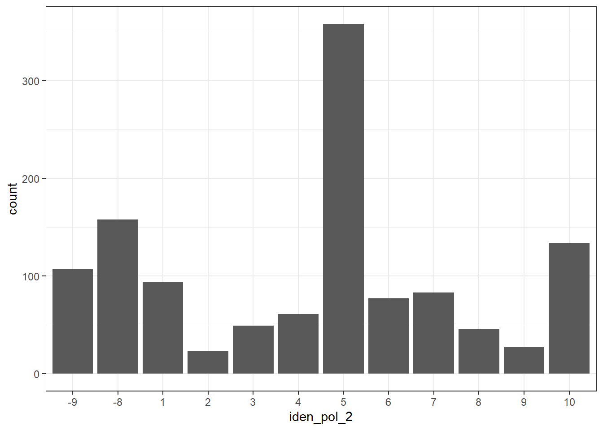
# Gráfico con porcentajes y personalización
theme_set(theme_bw())
g1b <- ggplot(cep, aes(x = iden_pol_2)) +
geom_bar(aes(y = (after_stat(count)) / sum(after_stat(count)) * 100),
color = "black", fill = "steelblue") +
labs(
y = "Porcentaje",
x = "Identificación política",
title = "Distribución de encuestados/as según identificación política",
caption = "Fuente: Encuesta CEP N°95"
) +
coord_flip()
g1b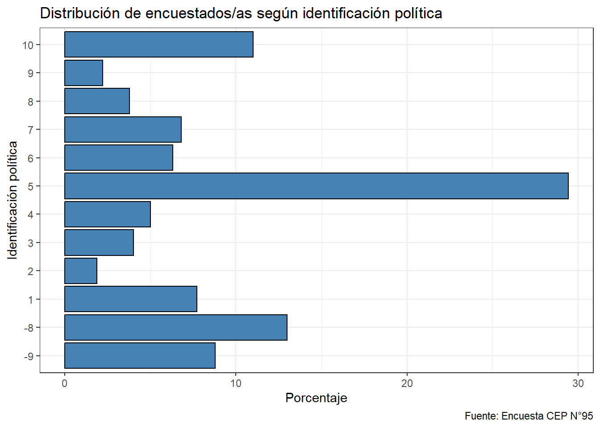
Pregunta de interpretación: ¿Qué ventaja tiene mostrar el gráfico con porcentajes en vez de frecuencias absolutas? ¿En qué situaciones es preferible usar
coord_flip()?
4.2 Ejercicio 1
Construye una tabla de frecuencias y un gráfico de barras para la variable region. Personaliza el gráfico usando un color distinto a los ejemplos anteriores.
# Tabla de frecuencias
data_region <- select(cep, region_3) %>% na.omit()
tabla_region <- data_region %>%
group_by(region_3) %>%
summarise(Frec_abs = n()) %>%
mutate(
Frec_porc = prop.table(Frec_abs) * 100
) %>%
arrange(desc(Frec_abs))
tabla_region# A tibble: 16 × 3
region_3 Frec_abs Frec_porc
<int> <int> <dbl>
1 13 519 42.6
2 5 122 10.0
3 8 98 8.05
4 7 65 5.34
5 4 58 4.77
6 6 58 4.77
7 10 50 4.11
8 9 49 4.03
9 2 42 3.45
10 16 34 2.79
11 14 32 2.63
12 1 27 2.22
13 3 19 1.56
14 12 17 1.40
15 15 15 1.23
16 11 12 0.986# Gráfico de barras
theme_set(theme_bw())
g_ej1 <- ggplot(cep, aes(x = region_3)) +
geom_bar(color = "red", fill = "lightblue") +
labs(y = "Frecuencia", x = "Región", title = "Distribución de encuestados/as según región") +
coord_flip()
g_ej1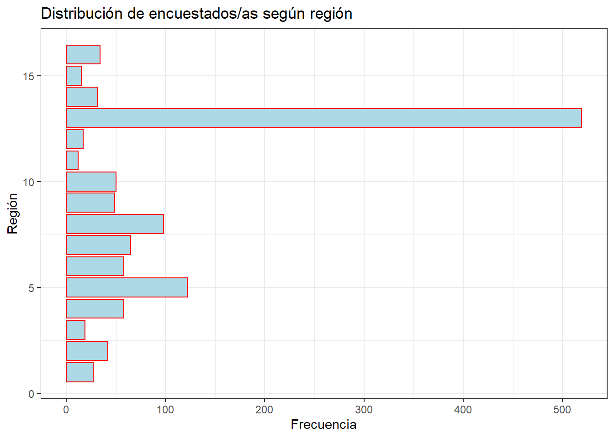
Pregunta: ¿Cuál es la región con mayor representación en la muestra?
5 Descriptivos para variables continuas
Las variables continuas se describen con estadísticos de tendencia central, dispersión y posición.
5.1 Variable continua: Edad
library(fBasics)
# Medidas de tendencia central y dispersión
mean(cep$edad, na.rm = TRUE) # media[1] 50.06984median(cep$edad, na.rm = TRUE) # mediana[1] 51min(cep$edad, na.rm = TRUE) # mínimo[1] 18max(cep$edad, na.rm = TRUE) # máximo[1] 91sd(cep$edad, na.rm = TRUE) # desviación estándar[1] 18.1895# Cuartiles
quantile(cep$edad, prob = c(0, 0.25, 0.5, 0.75, 1), na.rm = TRUE) 0% 25% 50% 75% 100%
18 35 51 64 91 # Quintiles
quantile(cep$edad, prob = c(0, 0.2, 0.4, 0.6, 0.8, 1), na.rm = TRUE) 0% 20% 40% 60% 80% 100%
18 31 45 56 66 91 # Deciles
quantile(cep$edad, prob = seq(0, 1, length = 11), na.rm = TRUE) 0% 10% 20% 30% 40% 50% 60% 70% 80% 90% 100%
18 25 31 37 45 51 56 62 66 75 91 # Tabla resumen con basicStats()
tab_edad <- select(cep, edad) %>% na.omit()
tab_edad <- basicStats(tab_edad)[c("Minimum", "Maximum", "Mean",
"Median", "Stdev",
"1. Quartile", "3. Quartile",
"Skewness", "Kurtosis", "NAs"), ]
# Convertir y transponer ANTES de nombrar
tab_edad <- as.data.frame(t(as.matrix(tab_edad)))
# Ahora sí: nombres de columnas
colnames(tab_edad) <- c("Mínimo", "Máximo", "Media", "Mediana",
"DS", "Q1", "Q3", "Asimetría", "Curtosis", "NAs")
# Nombre de fila
rownames(tab_edad) <- "Edad"
# Redondeo
tab_edad[, 1:9] <- round(tab_edad[, 1:9], digits = 1)
# Tabla interactiva con botón para exportar a Excel
DT::datatable(tab_edad,
caption = "Tabla 1: Estadísticos descriptivos — Edad",
extensions = "Buttons",
options = list(dom = "Bfrtip", buttons = c("excel"))
)Pregunta de interpretación: ¿Cuál es la edad promedio de los encuestados/as? ¿Por qué es importante comparar la media con la mediana? ¿Qué nos dice el valor de Q1 y Q3 sobre la distribución de edades?
6 Gráficos para variables continuas
6.1 Histograma: Edad
theme_set(theme_bw())
g2a <- ggplot(cep, aes(x = edad)) +
geom_histogram() +
labs(y = "Frecuencia", x = "Edad",
title = "Distribución de la variable Edad")
g2a`stat_bin()` using `bins = 30`. Pick better value `binwidth`.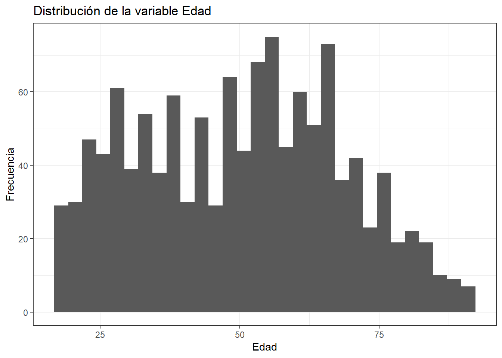
theme_set(theme_bw())
g2b <- ggplot(cep, aes(x = edad)) +
geom_histogram(binwidth = 5, color = "black", fill = "steelblue") +
labs(
y = "Frecuencia",
x = "Edad (años)",
title = "Distribución de la variable Edad",
caption = "Fuente: Encuesta CEP N°95"
)
g2b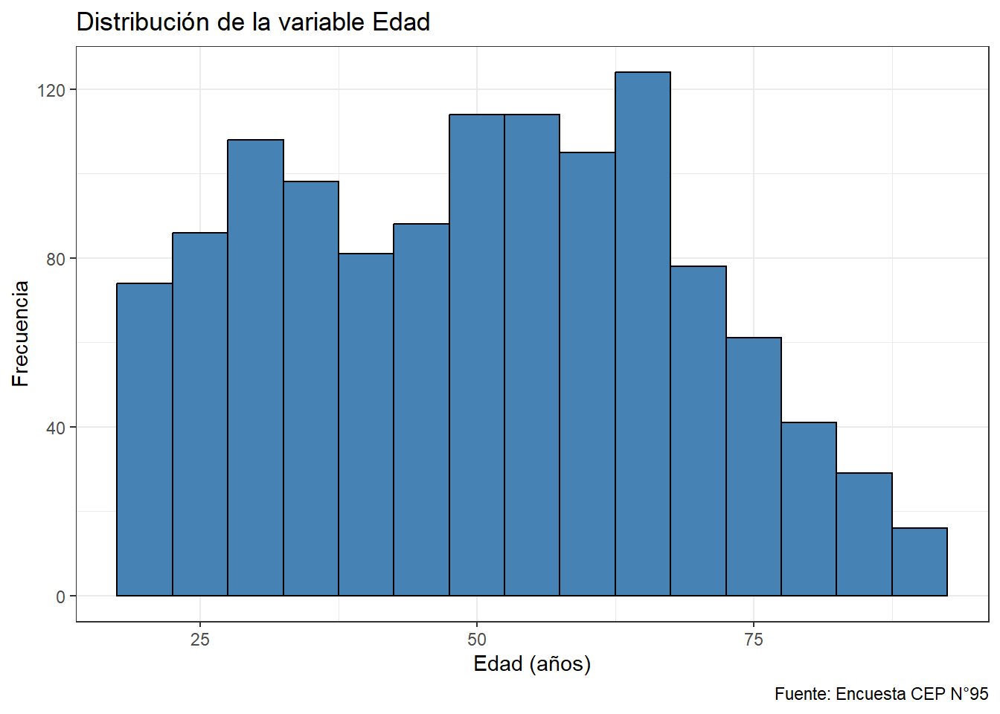
6.2 Boxplot: Edad
theme_set(theme_bw())
g3a <- ggplot(cep, aes(x = "", y = edad)) +
geom_boxplot(fill = "steelblue", outliers = TRUE) +
labs(
x = "",
y = "Edad (años)",
title = "Distribución de la variable Edad",
caption = "Fuente: Encuesta CEP N°95"
)
g3a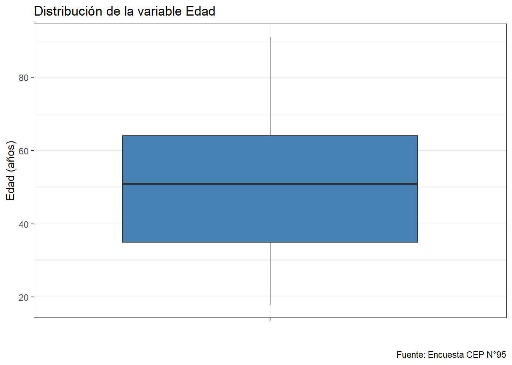
theme_set(theme_bw())
g3b <- ggplot(cep, aes(x = "", y = edad)) +
geom_boxplot(fill = "steelblue", outliers = TRUE) +
labs(
x = "",
y = "Edad (años)",
title = "Distribución de la variable Edad",
caption = "Fuente: Encuesta CEP N°95"
) +
coord_flip()
g3b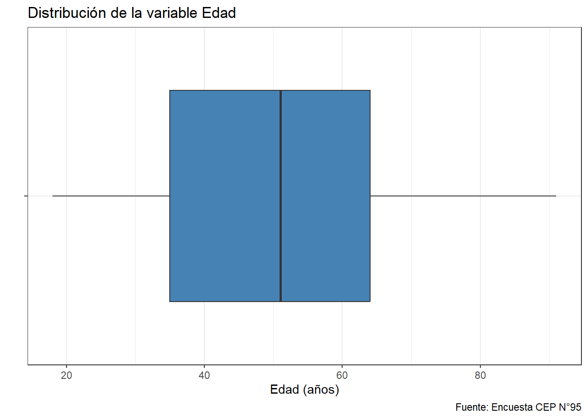
Pregunta de interpretación: Describe la forma de la distribución: ¿es simétrica o asimétrica? ¿Qué indica la línea central del boxplot? ¿Hay valores atípicos?
6.3 Ejercicio 2
Calcule los estadísticos descriptivos y elabore un histograma y un boxplot para la variable edad según la variable zona_u_r.
# 1. Preparamos un subconjunto de datos limpio
datos_boxplot <- cep %>%
filter(!is.na(zona_u_r), !is.na(edad)) %>% # Quitamos los casos sin respuesta
mutate(zona_categoria = as.factor(zona_u_r)) # Convertimos a factor (1=Urbano, 2=Rural)
# 2. Creamos el gráfico
g_box <- ggplot(datos_boxplot, aes(x = zona_categoria, y = edad, fill = zona_categoria)) +
geom_boxplot(
alpha = 0.7, # Hace los colores un poco más suaves
outlier.color = "red", # Resalta los valores atípicos en rojo
outlier.size = 2 # Hace los valores atípicos más visibles
) +
labs(
title = "Distribución de la Edad según Zona de Residencia",
subtitle = "Los puntos rojos representan edades atípicas (outliers)",
x = "Zona (1 = Urbano, 2 = Rural)",
y = "Edad (años)",
fill = "Zona"
) +
theme_bw() +
theme(legend.position = "none") # Quitamos la leyenda porque el eje X ya lo explica
g_box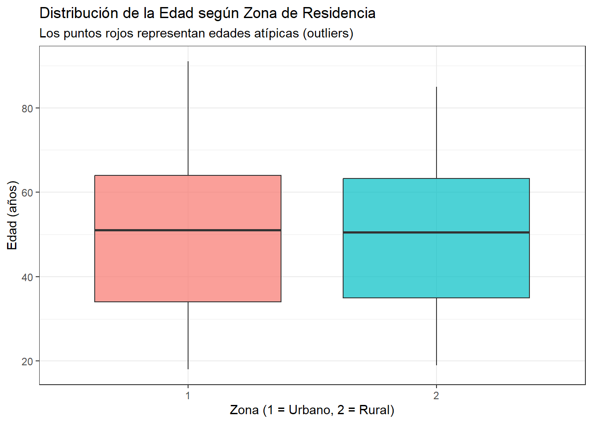
Preguntas de interpretación:
- Observa la línea gruesa horizontal en el centro de cada caja (la mediana): ¿Qué grupo tiene una población ligeramente más envejecida?
- Observando el tamaño de las cajas (Rango Intercuartílico), ¿en qué zona las edades están más concentradas?
6.4 ¿Qué grupo tiene una mayor variabilidad en la edad?
7 Análisis bivariado simple
En esta sección exploraremos la relación entre dos variables: una continua comparada por grupos (boxplot) y dos variables continuas (dispersión).
7.1 Gráfico de dispersión: Edad e Interés en la política
theme_set(theme_bw())
g5a_jitter <- ggplot(cep %>% filter(!is.na(interes_pol_1_b), !is.na(edad)),
aes(x = as.factor(interes_pol_1_b), y = edad)) +
# Usamos jitter en vez de point. 'width' controla cuánto se dispersan horizontalmente
geom_jitter(alpha = 0.3, width = 0.2, color = "steelblue") +
labs(
x = "Interés en la política",
y = "Edad (años)",
title = "Relación entre edad e interés en la política",
caption = "Fuente: Encuesta CEP N°95"
)
g5a_jitter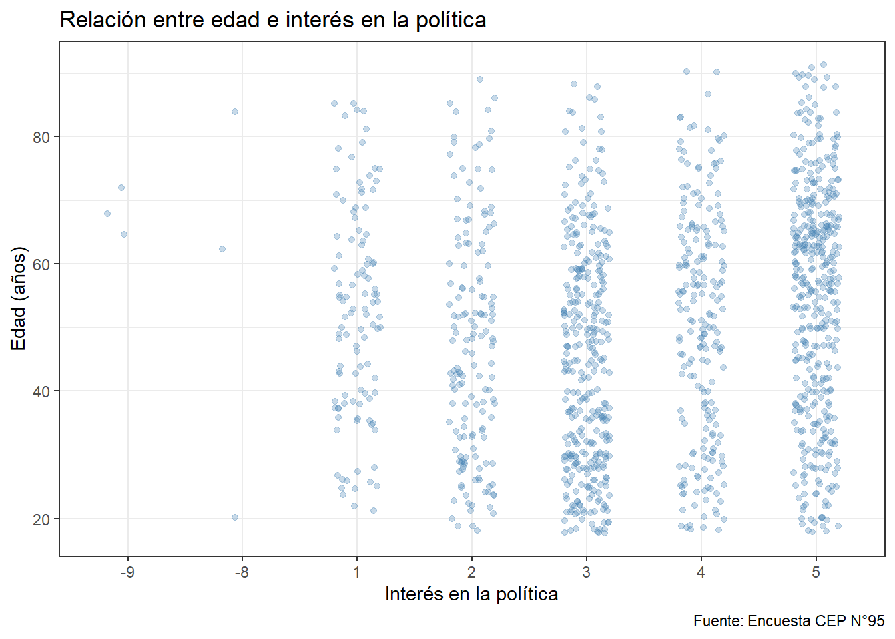
# Con línea de tendencia lineal
theme_set(theme_bw())
g5b_jitter <- ggplot(cep, aes(x = edad, y = interes_pol_1_b)) +
geom_smooth(method = "lm", color = "firebrick") +
geom_jitter(alpha = 0.3, width = 0.2, color = "steelblue") +
labs(
x = "Interés en la política",
y = "Edad (años)",
title = "Relación entre edad e interés en la política",
caption = "Fuente: Encuesta CEP N°95")
g5b_jitter`geom_smooth()` using formula = 'y ~ x'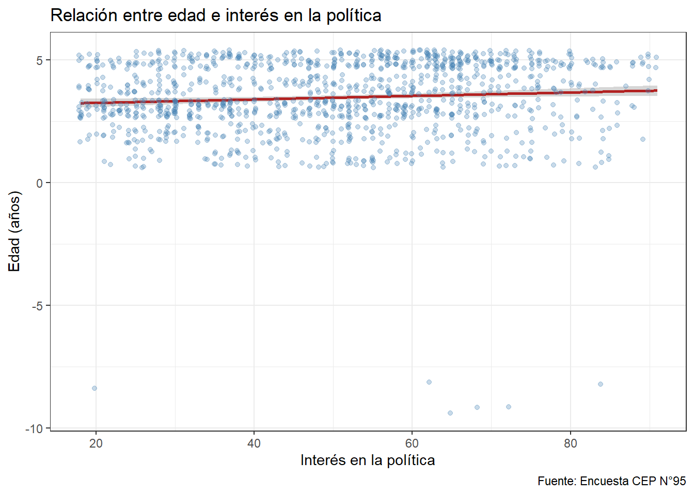
Pregunta de interpretación: ¿Existe una relación entre edad y interés en la política? ¿La relación es positiva o negativa? ¿Es fuerte o débil?
7.2 Ejercicio 3
En este ejercicio analizaremos si la edad influye en el interés por la política. Para ello, construiremos un boxplot comparativo.
Instrucciones: 1. Filtra los valores perdidos (NA) de ambas variables. 2. Asegúrate de que la variable interes_pol_1_b sea leída como una categoría usando as.factor(). 3. Completa el código ggplot (¡recuerda NO usar comillas para los nombres de las variables dentro del aes!). 4. Añade un color para resaltar los valores atípicos (outliers).
# 1. Preparar los datos (filtrar NAs y crear el factor)
datos_ej3 <- cep %>%
filter(!is.na(interes_pol_1_b), !is.na(edad)) %>%
mutate(interes_cat = as.factor(interes_pol_1_b))
# 2. Construir el gráfico
theme_set(theme_bw())
g_ej3 <- ggplot(datos_ej3, aes(x = interes_cat, y = edad, fill = interes_cat)) +
geom_boxplot(outlier.color = "red", alpha = 0.7) +
labs(
x = "Interés en la política (1=Mucho, 4=Ninguno)",
y = "Edad (años)",
title = "Distribución de edad según interés en la política",
caption = "Fuente: Encuesta CEP N°95"
) +
theme(legend.position = "none") # Quitamos la leyenda porque el eje X ya lo explica
g_ej3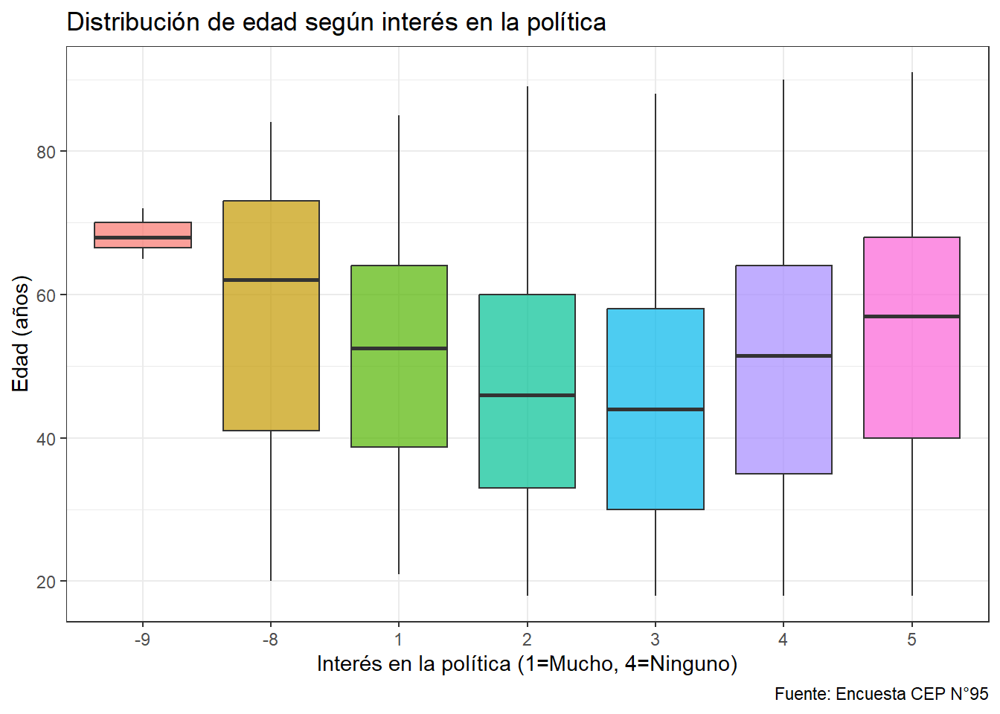
Preguntas de interpretación:
- ¿La distribución de edad es similar entre zona urbana y rural, o hay diferencias notables?
- ¿Hay alguna zona con mayor variabilidad en la edad de sus encuestados/as?
- ¿Qué limitaciones tiene este tipo de gráfico para interpretar diferencias entre grupos?